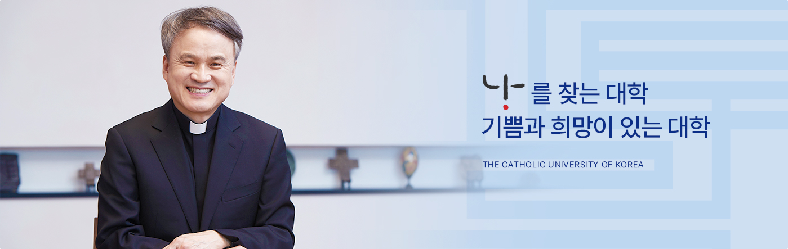

1855년 충청북도 배론에서 ‘성 요셉 신학교’를 세우셨던
조제프 메스트르(Joseph Maistre, 1808-1857) 신부님의 외로운
결단을 생각합니다. 교회와 한국의 미래를 위해서 인재를
양성해야 한다는 것, 한국 교회의 미래는 한국인에게 맡겨야
한다는 그 분의 안목과 결단이 없었다면 오늘날
가톨릭대학교는 존재하지 않았을 것입니다. 메스트르 신부님
덕분에 가톨릭대학교는 우리나라에서 최초로 근대식
서양학문을 체계적으로 가르치기 시작한 최초의 대학이
되었습니다.
학령인구 감소 등 오늘날 사립대학으로서 우리 대학이 처한
사회적 상황이 비록 긍정적이지 않다하더라도 박해시대 중에서
신학교를 세우신 메스트르 신부님을 기억하며, 우리 대학이
미래의 대한민국을 짊어지고 갈 인재를 양성하기 위한
것이라면 어떤 모험을 감수하더라도 도전하고 개척해
나가겠습니다.
학생들은 우리 대학과 우리나라의 미래입니다.
현재 우리 대학이 국고 사업으로 추진하고 있는
대학혁신지원사업, 4단계 BK21 사업 등을 통해서 우리대학은
잘 가르치는 대학, 교육을 잘하는 대학으로 거듭나게 될
것입니다.
우리 대학의 가장 자랑스러운 자산은 교양 교육이라 할 수
있습니다. 우리 대학의 교양 교육을 받은 학생들은 자신의
분야에서는 전문인으로서의 자격을 갖추면서도 남을 배려하고
가난한 사람을 도울 줄 압니다. 도덕성과 올바른 가치관을
가지며 자신의 잘못을 인정할 줄 알고 다른 사람을 용서할 줄
알 뿐만 아니라 겸손하여서 자신이 누구인지 압니다. 대화가
통하여 우정을 아는 인격자일 뿐 아니라 적어도 외국어를
하나쯤은 능통하게 할 수 있어 세계 어디서도 당당합니다.
철학과 예술과 문학을 사랑하는 인문학적 소양을 지녀서
인생의 의미를 알고 인생을 즐길 줄 압니다.
오늘날 신자유주의에 따른 치열한 경쟁과 황금만능주의 사회
속에서 경쟁을 하되 협력하고 서로 나누면서 함께 노력하면 더
좋은 성과를 얻을 수 있다는 삶의 지혜를 우리 대학은 가르칠
것입니다.
"가톨릭대학교 제8대 총장" 원종철 신부